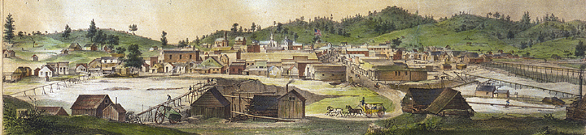
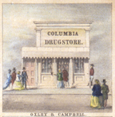
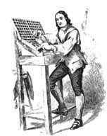

COLUMBIA HISTORY PAGE.

Columbia looking north from Kennebec Hill c1855

About Columbia.
BUILDING LOCATOR - Map of Town
COLUMBIA'S CEMETERIES
The following sections are listed below.
China Plot
Masonic Cemetery
Odd Fellows Cemetery
Public Cemetery
St. Anne's Cemetery
G.A.R. Locations
Springfield
THE PROBLEM WITH COLUMBIA'S BUILDINGS
About the materials, etc.
Columbia's Citizens.
Animals of Columbia.
Bakers of Columbia.
Bands of Columbia.
Bands of Columbia 2.
Barbers of Columbia.
Black Americans of Columbia.
Clementine Brainard
Carpenters of Columbia.
Carpenters of Columbia (another look).
COLUMBIA'S CEMETERIES
Chinese of Columbia.
Doctors.
Law & Order.
Newspapermen.
Merchants & Personalities.
Mexicans.
Mexicans Census.
Mexican Outlaw.
Mexican Outlaw 2.
Miwok Indians.
Photographic Studios.
Professional Women.
Population via Census.
Saloons of Columbia.
School Teachers of Columbia.
Stage Lines & Liveries.
Stage Travel & Accidents.
Building Histories.
Assay Offices. (behind Wells, Fargo)
Bowling Saloon Display. (Knapp Block)
Brainard Building. (Candle Dipping)
Broehmer Building. (Artificer's Exchange)
California Store. (Franco cabin)
Carpenter Shop. (New Justice Court)
Chinese Display. (Old Justice Court)
Cottage A. (City Hotel Rentals)
Cottage B. (City Hotel Rentals)
Claverie Ruin. (Chinese Store)
Columbia Museum. (Knapp Block)
D.O. Mills Bank. (Currently Document Archive)
Duchow Building. (Drug Store display)
Ferguson Block. (Columbia Clothiers & Emporium)
Franklin-Wolfe Building. (Columbia Booksellers)
French Store. (former Sector office)
Hildenbrand Building. (N.S.G.W)
Jail. (Formerly blasting powder Storage)
Knapp - Middle. (Bowling Saloon)
Knapp - North. (Ebler's Leather Store extended)
Mercantile. (Columbia Mercantile - 1855)
Questai Building. (old photo shop - EMPTY)
San Francisco Lager Beer Saloon. (Brown's Coffee House)
San Francisco Store. (Enterpreter Center)
Wilson's Store and People's Market. (Ebler's Leather)
Houses of Early Columbia.
Wilson House. (High Noon House)

Missing Buildings & Vacant Lots.
1st Brick Store: Donnell & Parson.
Arnold, Brown & Co. Store (#43)
Back of DO Mills & Wells, Fargo.

The History of First Fire Companies & Papeete.
The History of the two Fire Companies
The History of Citizen #1 Under State Protection. 
Columbia's Editors and Newspapers.
History of Columbia's Newspapers 2.
COLUMBIA'S PRESSES
Militias, etc.
Columbia Fusiliers. (1853-1857)
Capitols of California
COLUMBIA'S NEWSPAPERS.


COLUMBIA'S WESTERN MOVIES.

1st New York Legion in Tuolumne County. (1847-1852)
1st New York Legion. (1847-1852)
James Allen Hardie of the 1st New York Legion. (1823-1876)
Battle of Sawmill Flat. (1852)
Militias. (1850-1890)
Interesting Information.
(May or may not have anything to do with Columbia)
Joaquin Murrieta
Captain Harry Love
Billy the Kid's Chronology
Jesse James Chronology

This page is created for the benefit of the public by
Floyd D.P. Øydegaard.
Email contact:
fdpoyde3 (at) Yahoo (dot) com
A WORK IN PROGRESS,
created for the visitors to the Columbia State Historic park.
© Columbia State Historic Park & Floyd D. P. Øydegaard.